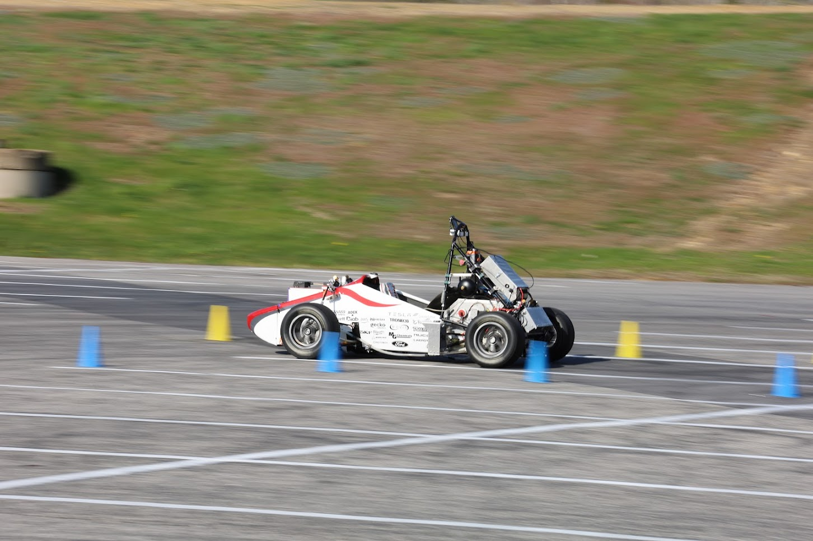

Introduction
Welcome to the documentation for Carnegie Mellon Racing (CMR)’s driverless controls software! Carnegie Mellon Racing is a premier student organization at Carnegie Mellon University that designs and builds autonomous vehicles to compete in the annual Formula Student Driverless competition. As part of our efforts to support other FSAE teams as they embark on their driverless journeys, we have open-sourced our workspace at our GitHub and documented them here.
Controls is one element of our software stack, coming in after Perceptions and Path Planning.
We recommend heading to Overview for a top-down deep dive into how the controller works. You can stop at any level of abstraction you prefer. While we only assume basic programming knowledge, feel free to read more into the software that the controller depends on, namely C++, ROS2 Humble, CUDA, and Thrust. We also provide a cheat sheet of common Terminology.
If you’re part of the team, looking to contribute or learn more about implementation details, check out File Structure
to understand how the codebase in driverless/driverless_ws/src/controls is laid out, then refer to the API Reference
Have fun and enjoy the ride!
Contents:
- Overview
- Explainers
- API Reference
- Class ControllerNode
- Class mppi::MppiController
- Class mppi::MppiController_Impl
- Class state::StateEstimator
- Class state::StateEstimator_Impl
- Class state::StateProjector
- File functors.cuh
- File model.cuh
- File constants.hpp
- File types.hpp
- File types.cuh
- File cuda_globals.cuh
- File cuda_utils.cuh
- File cuda_constants.cuh
- File helpers.cuh
- File gl_utils.hpp
- Terminology